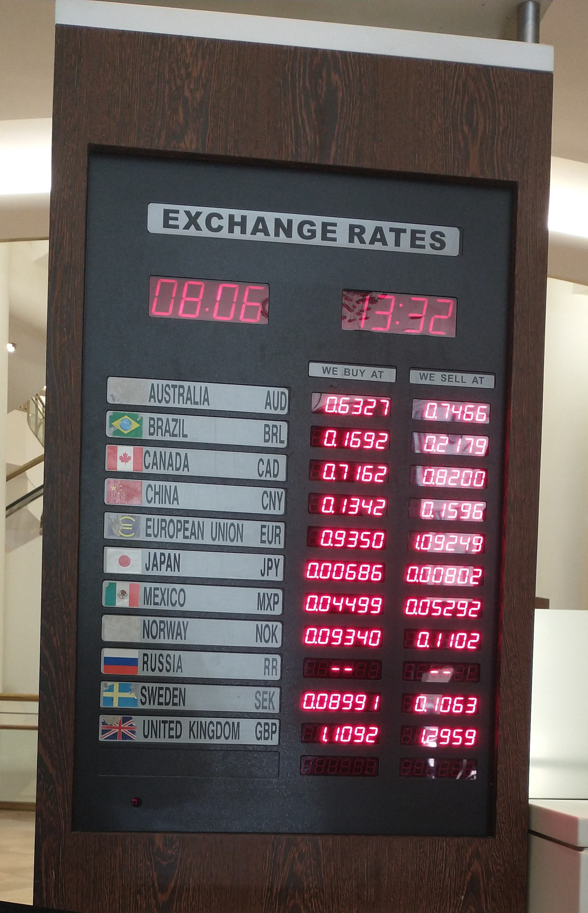

Valyuta kursi qanday belgilanadi va nega oʻzgaradi: toʻliq maʼlumotnoma
Valyuta kursi rejimlari (erkin va boshqariladigan suzuvchi, qatʼiy/bogʻlangan), kursni harakatga keltiruvchi omillar (talab-taklif, foiz stavkalari, inflyatsiya, savdo balansi, kapital oqimi), nominal va real kurs, xarid qobiliyati pariteti (Big Mac indeksi). Oʻzbekiston misolida: 2017-yil 5-sentabrdagi liberalizatsiya (4 210 → 8 100 soʻm/dollar) va soʻmning bugungi kursi. XVJ va Oʻzbekiston Markaziy banki maʼlumotlariga asoslangan.

Valyuta kursi — bir mamlakat pulining boshqa mamlakat puliga nisbatan bahosi (masalan, 1 dollar necha soʻm). U pul oʻtkazmalari, import narxlari, jamgʻarma va savdo uchun bevosita ahamiyatga ega. Quyida kurs qanday belgilanishi va nega oʻzgarishi faktlar bilan, XVJ, Oʻzbekiston Markaziy banki va boshqa manbalar asosida tushuntiriladi.
Valyuta kursi rejimlari
Kurs qanday aniqlanishi “rejim”ga bogʻliq. Asosiy turlari: erkin suzuvchi (free float) — kurs faqat bozordagi talab va taklif bilan belgilanadi, hukumat aralashmaydi; boshqariladigan suzuvchi (managed float) — asosan bozor belgilaydi, lekin markaziy bank keskin tebranishlarni yumshatish uchun aralashishi mumkin; qatʼiy/bogʻlangan (fixed/peg) — pul boshqa valyutaga yoki savatga qatʼiy bogʻlab qoʻyiladi; valyuta kengashi (currency board) — bogʻlanishni qatʼiy huquqiy qoidalar bilan mustahkamlaydi; dollarizatsiya — mamlakat oʻz pulidan voz kechib, boshqa davlat valyutasini (masalan, dollarni) qabul qiladi. Oʻzbekiston bugun boshqariladigan suzuvchi rejimda ishlaydi va Markaziy bank suzuvchi kursga sodiqligini taʼkidlaydi.
Suzuvchi kursni nima harakatga keltiradi
Suzuvchi rejimda kurs quyidagi standart omillar bilan oʻzgaradi: valyutaga talab va taklif (eksport va importga bogʻliq); foiz stavkalaridagi farq (yuqori real stavka chet el kapitalini jalb qilib, valyutani mustahkamlaydi); inflyatsiyadagi farq (past inflyatsiya valyutani kuchaytiradi); savdo balansi va joriy hisob (profitsit valyutaga talabni oshiradi); kapital oqimi (chet el investitsiyasi kelishi valyutani mustahkamlaydi, ketishi zaiflashtiradi); bozor kutilmalari va spekulyatsiya; hamda markaziy bank aralashuvi. Aralashuv koʻpincha faqat qisqa muddatli taʼsir beradi — uzoq muddatda kursni fundamental omillar (inflyatsiya, foiz, oʻsish) belgilaydi.
Nominal va real kurs, kuchayish va zaiflashish
Nominal kurs — bozordagi kotirovka (masalan, 1 dollar necha soʻm). Real kurs esa nominal kursni ikki mamlakatdagi narxlar (inflyatsiya) farqiga tuzatib, xalqaro raqobatbardoshlikni oʻlchaydi. Atamalarga eʼtibor bering: suzuvchi rejimda pul bozor taʼsirida kuchayishi (appreciation) yoki zaiflashishi (depreciation) mumkin; qatʼiy rejimda hukumat kursni rasman koʻtarsa — revalvatsiya, tushirsa — devalvatsiya deyiladi.
Xarid qobiliyati pariteti va Big Mac indeksi
Xarid qobiliyati pariteti (PPP) nazariyasiga koʻra, uzoq muddatda kurs bir xil tovarlar savati narxini ikki mamlakatda tenglashtiradigan darajaga intiladi. Buni ommabop tushuntiruvchi misol — “Britan” jurnali The Economist 1986-yildan beri chiqaradigan Big Mac indeksi: bir xil Big Mac burgeri turli davlatlarda qancha turishini AQSh narxi bilan solishtirib, valyuta “qadrsizlangan” yoki “qadrini oshirgan” ekanini koʻrsatadi. Bu — qatʼiy oʻlchov emas, balki soddalashtirilgan illyustratsiya.
Oʻzbekiston misoli: soʻm va 2017-yilgi liberalizatsiya
Oʻzbekiston milliy valyutasi — soʻm (xalqaro kodi UZS). Uni Oʻzbekiston Respublikasi Markaziy banki chiqaradi va kursni boshqaradi. 2017-yil 5-sentabrda Oʻzbekiston valyuta bozorini liberallashtirdi: rasmiy kurs bir dollar uchun taxminan 4 210 soʻmdan qariyb 8 100 soʻmga tushirilib, soʻm suzuvchi rejimga oʻtkazildi va valyuta sotib olish cheklovlari bekor qilindi. Bu bilan avvalgi ikki xil (rasmiy va “qora bozor”) kurslar birlashtirildi; yangi rasmiy kurs hatto qora bozor kursidan biroz zaifroq belgilanib, aholi dollarni rasmiy banklarga sotishga ragʻbatlantirildi.
Liberalizatsiyadan keyin soʻm asta-sekin bozor sharoitida harakatlanmoqda. Markaziy bank maʼlumotiga koʻra, 2026-yil sentabr holatiga bir dollar qariyb 11 800 soʻm atrofida (aniq kun kursi cbu.uz’da eʼlon qilinadi). Suzuvchi kurs soʻmga tashqi zarbalarni (jahon narxlari, pul oʻtkazmalari oqimi) yumshatib qabul qilish imkonini beradi.
Pul oʻtkazmalari va eksport soʻmga qanday taʼsir qiladi
Chet eldagi (ayniqsa Rossiya va Janubiy Koreyadagi) fuqarolar yuboradigan pul oʻtkazmalari mamlakatga chet el valyutasi kirimini oshiradi va soʻmni qoʻllab-quvvatlaydi. Xuddi shunday, eksport tovarlari — oltin, tabiiy gaz, paxta — narxi jahonda koʻtarilsa, valyuta tushumi oshib, soʻmga bosim kamayadi; narx tushsa, aksincha. Shuning uchun soʻm kursini kuzatishda inflyatsiya, foiz stavkalari, pul oʻtkazmalari va xomashyo narxlariga qarab boriladi.